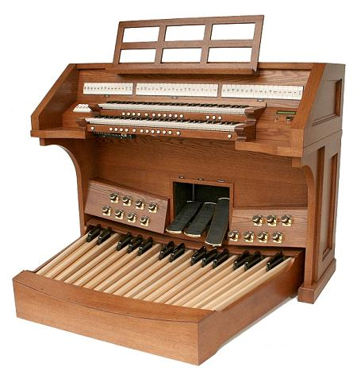
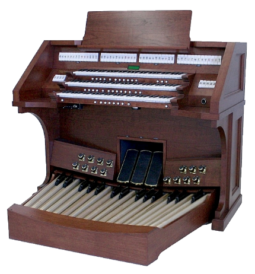

D.L. Simmons & Company Church Organs
LOW-PROFILE CONSOLES
The Phoenix Organ low-profile consoles are a very attractive way to provide the organist with a view above the console. The ergonomics of this console are as comfortable as any ever built and organists will enjoy the user-friendly, logical layout of all stops and controls. Below are two possible specifications but others are possible upon request.


WEBSITE CONTENTS COPYRIGHT© 2015
DL SIMMONS & COMPANY CHURCH ORGANS
DL SIMMONS & COMPANY CHURCH ORGANS

PHOENIX PDF 246
PHOENIX PDF344